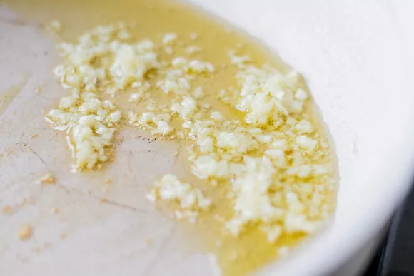
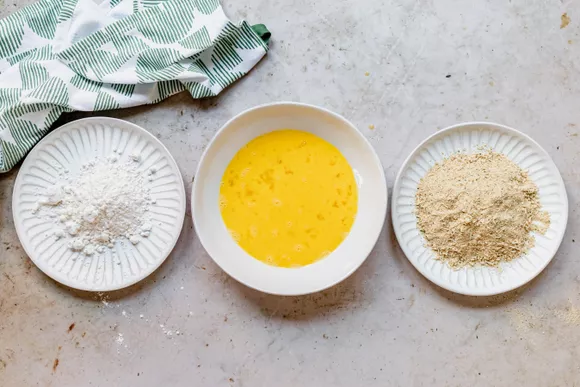
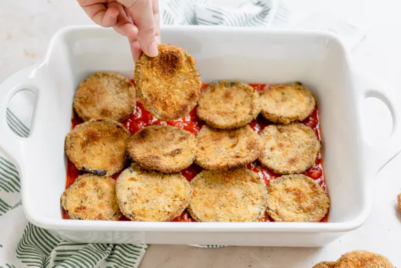
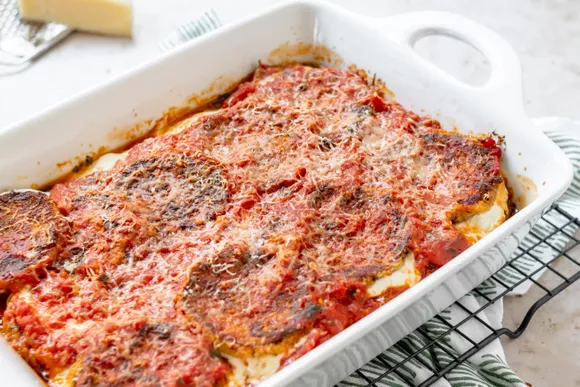

Prepare the eggplant: Slice the eggplants into 1/4 to 1/2-inch thick rounds. Lay the eggplant slices out on a rack over a rimmed sheet pan (or on several layers of paper towels). Sprinkle both sides of the eggplant rounds lightly with salt. Let the eggplant rounds sit and release moisture for at least 1 hour and up to 2 hours.
Make the sauce: Heat 1 tablespoon olive oil in a 4-quart saucepan on medium heat. Add the minced garlic and gently cook for 1 minute or until fragrant. Add the tomatoes and their juices, breaking up the tomatoes as you add them to the pot. Increase the heat to bring to a simmer, then lower the heat to maintain a very low simmer for 15 minutes, uncovered. Add salt and pepper to taste. Add the minced basil and remove from heat.
Preheat the oven:Place the oven rack in the middle and preheat the oven to 425°F.
Prepare a dredging station:Combine 1 1/2 cups of the breadcrumbs with 1/4 cup of the Parmesan cheese, and place in a shallow bowl or rimmed dish. Set up your station so that you have flour in one shallow bowl, beaten eggs in another bowl, and the breadcrumb cheese mixture in another, in that order.
Dredge the eggplant rounds:Set out two rimmed sheet pans. Spread 1 tablespoon of olive oil in the bottom of each pan. The eggplant rounds should be wet from releasing moisture after salting them. Pat the eggplant slices dry with paper towels. Working one at a time, dredge the eggplant slices first in the flour, then dip in the beaten eggs, and then dredge in the breadcrumb Parmesan cheese mixture. Add more breadcrumbs, if needed. Place on the oiled sheet pans in a single layer. Drizzle a little oil over the top of each breaded eggplant round.
Bake the eggplantsPlace breaded prepared eggplant slices in the oven. Cook for 18 to 20 minutes at 425°F, turning the slices over at the halfway point, until they are nicely browned and fork-tender. Remove from oven, and let cool to touch.
Assemble the casserole Spread 1 cup of the tomato sauce over the bottom of a 9 x 13-inch casserole dish. Place a third of the eggplant rounds in a single layer covering the sauce on the bottom of the pan. Layer half of the sliced mozzarella on top of the eggplant rounds. Sprinkle with 1/3 cup of the Parmesan cheese. Place another third of the eggplant rounds over the cheese. Spread 1 cup of the sauce over the eggplant rounds. Layer the rest of the sliced mozzarella over the sauce. Sprinkle with 1/3 cup of shredded Parm. Add the remaining eggplant in a single layer on top of the cheese. Top with the remaining sauce and the remaining Parmesan.
Bake,Rest and Serve:Reduce the oven to 350°F and bake, uncovered, until the cheese is melted and the casserole is bubbly around the edges, about 35 minutes. Remove from the oven and let sit for 10 minutes before cutting into to serve.
